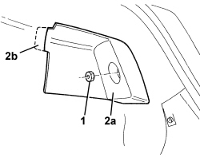
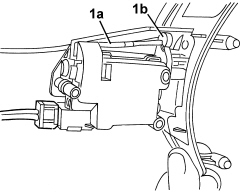
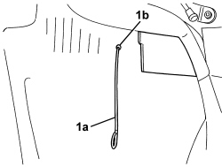
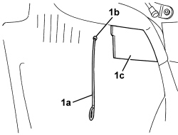

7025C32 FUEL FILLER FLAP CATCH CONTROL - R+R
- Path
- Procedures > 70 FITTINGS > 7025 COMPARTMENT COVERS > 7025C VARIOUS FLAPS (EXTERIOR) > 7025C32 FUEL FILLER FLAP CATCH CONTROL - R+R
- Kind
- repair procedure (removal / refitting; the operation number is the code)
- Applies to
- all engines; all production periods
- Interactive page
- https://sloeber94.github.io/elrnDB/#/939011225
Applies to: all engines; all production periods
 Removing
Removing
 Refitting
Refitting- Open the boot lid.
1. Undo the nut fixing the access cover for the right outside light.
2. Remove the access cover (2a) for the light, releasing the retainer (2b).

Applies to: all engines; all production periods
- Open the fuel filler cap access flap.
1. Undo the motor fixing bolts.
2. Undo the fuel filler cap.
3. Gently extract the motor support.
- Retighten the fuel filler cap.

Applies to: all engines; all production periods
1. Disconnect the emergency control cord (1a) from the motor retainer (1b).

Applies to: all engines; all production periods
1. Working in the luggage compartment, release the emergency control cord (1a) from the opening (1b) in the lining.

Applies to: all engines; all production periods
Refitting
Removing1. Check that the emergency control cord is not damaged. Working in the luggage compartment, pass the emergency control cord (1a) through the opening (1b) in the lining, then make the end come out in the fuel filler using a hand in the compartment.(1c).

Applies to: all engines; all production periods
- Connect the emergency control cord to the motor retainer.
- Undo the fuel filler cap.
- Place the support and motor in position and secure them using the bolts.
- Retighten the fuel filler cap.
- Close the fuel filler cap access flap.
- Position the right outer light cover and attach the retainer.
- Tighten the nut.
- Close the boot lid.